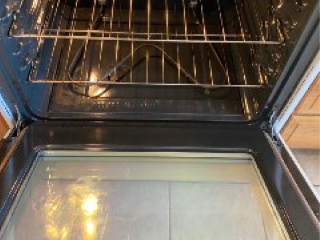
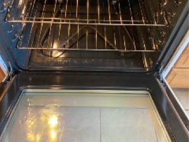

How It All Got Started
Supermom's Cleaning Services started all the way back in 2012, with a mother returning to the workforce and a dream. Rachel envisioned herself owning her own business after raising her four children mostly as a single mother, but wasn't sure how to balance the operations of growing a business with providing the best for her kids. That is, until she decided to mix her cleaning skills with her business dream. Thus, Supermom's Cleaning Service was born.
For the last 8 years, Rachel has devoted herself to providing the best in residential cleaning services in the greater southern Vermont area, with reputable mention across all her clients that she's been with for years now. Whoever she works with, Rachel goes the extra mile to ensure client satisfaction and homes that are left sparkling clean.
 



Meet Your Cleaning Specialist

Rachel Rhodes is your go-to expert cleaning specialist. As a mother of four, she's got years of experience keeping up with household messes and giving homes the extra shine they deserve. Rachel grew up in Portsmouth, NH before coming to the southern VT area after high school to start her own family. After being out of the workforce for some time due to raising her children, Rachel decided the best way to get back into business was to create her own.
Being a comic book fan, it was only natural that her business persona take on the role of Supermom, master of cleaning and making sure her children are provided for while providing excellent service to her clients, all at the same time. Rachel's children comprise two adult daughters; one teenage daughter; and one young son; all of whom keep her on her toes throughout her business ventures. Nonetheless, Supermom is here to save you time and make your home shine - cleaning your residence while you focus on your own business and family needs!
Book a Cleaning Today